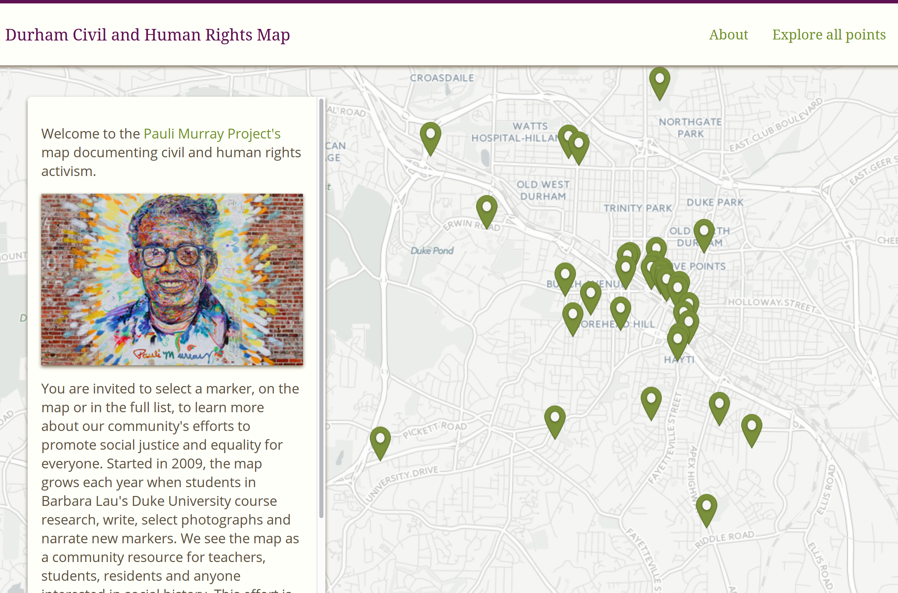

The black community began protesting to integrate this signature athletic park, home to the Durham Bulls Baseball Club in 1957 when the first two black players, Bubba Norton and Ted Richardson, were added to the roster.
REST in Drupal 8
Kosta Harlan @ Savas Labs
A bit about me

Photo by Jessie Gladdek
What we'll discuss today
- Brief look at the evolution of Drupal's REST capabilities
- Views and implementing a GET API for JSON/XML requests
- Using Drupal's RESTful API module with REST UI
- Self Documenting REST API
- Entity Query API
- Rest Resource Plugins
- Other plugins
1. Web services + Drupal
This isn't something new in Drupal
commit 1b7510eebf0da114677408674e552201ff0711c9
Author: Dries Buytaert <dries@buytaert.net>
Date: Sun Sep 9 16:47:10 2001 +0000
- Added an XML-RPC server. Modules that want to export remote procedure
calls can implement the new 'xmlrpc' hook.
Example:
function mymodule_xmlrpc() {
return array("drupal.myfunction" => array("function" => "mymodule_myfunction"));
}
In my view, we need to do the following [...] (1) facilitate a single robust REST module in core; (2) add functionality to help web services modules more easily query and manipulate Drupal's entity graph; (3) incorporate GraphQL and JSON API out of the box; and (4) add SDKs enabling easy integration with Drupal.
| 8.2 (Q4 2016) | 8.3 (Q2 2017) | Beyond 8.3 (2017+) |
|---|---|---|
| New REST API capabilities Waterwheel initial release |
New REST API capabilities JSON API module |
GraphQL module? Entity graph iterator? |
2. Views + REST: Create a GET API
Views + REST: Using fields
Views + REST: Multiple Formats
curl http://esip.demo:8888/api/articles?_format=json
[
{
"label": "Ea Nulla Ullamcorper",
"summary": "Caecus cogo fere modo olim. Dolor elit importunus nunc pala tego. Abico facilisi genitus mos obruo sagaciter si tum."
},
{
"label": "Nisl Sudo",
"summary": "Hos natu refero. Accumsan aliquip conventio elit erat ex ratis secundum ymo. Abbas augue facilisi saluto veniam."
}
]
Views + REST: Multiple Formats
curl http://esip.demo:8888/api/articles?_format=xml
-
<p>Caecus cogo fere modo olim. Dolor elit importunus nunc pala tego. Abico facilisi genitus mos obruo sagaciter si tum.
-
<p>Abbas comis ideo ille olim paulatim pneum praemitto verto voco. Abigo dolor eu ille patria quidne roto.
Other formats
- HAL JSON
- JSON API
- Views GeoJSON
Real world example: Views GeoJSON
GET http://www.durhamcivilrightsmap.org/points?_format=jsoncode
{
"type": "FeatureCollection",
"features": [
{
"type": "Feature",
"geometry": {
"type": "Point",
"coordinates": [
-78.90242,
36.02799
]
},
"properties": {
"name": "Desegregating the Durham Athletic Park",
"description": "The black community began protesting to integrate this signature athletic park, home to the Durham Bulls Baseball Club in 1957 when the first two black players, Bubba Norton and Ted Richardson, were added to the roster.
",
"field_address_text": "500 W. Corporation Street, Durham, NC 27701",
"field_photos": "  \n\n\n,
\n\n\n,  \n\n\n",
"First photo": "
\n\n\n",
"First photo": "  \n\n",
"field_tags": "Civil Rights, Desegregation, Athletics",
"title_1": "Desegregating the Durham Athletic Park",
"view_node": "Read and hear more",
"nothing": ""
}
},
}
}
\n\n",
"field_tags": "Civil Rights, Desegregation, Athletics",
"title_1": "Desegregating the Durham Athletic Park",
"view_node": "Read and hear more",
"nothing": ""
}
},
}
}
3. RESTful Web Services module + REST UI
4.Self-Documenting API
5. Entity Query API
- Ranges
- Sorts
- Conditions
- Condition Groups
/entity/node?_format=json&condition_0[field]=type&condition_0[value]=article&condition_0[operator]=EQ&range[start]=0&range[length]=1
[
{
"nid": [
{
"value": "3"
}
],
"uuid": [
{
"value": "8597f291-4c43-4758-a034-52a4549fd883"
}
],
"vid": [
{
"value": "3"
}
],
"langcode": [
{
"value": "en"
}
],
"type": [
{
"target_id": "article",
"target_type": "node_type",
"target_uuid": "c4b6fd01-9365-4155-9204-4d5006387567"
}
],
"title": [
{
"value": "Info about the summer league"
}
],
"uid": [
{
"target_id": "2",
"target_type": "user",
"target_uuid": "0e465925-1cb4-4d34-8c00-a51f46b3a7ff",
"url": "/user/2"
}
],
"status": [
{
"value": "1"
}
],
"created": [
{
"value": "1430183142"
}
],
"changed": [
{
"value": "1445563827"
}
],
"promote": [
{
"value": "1"
}
],
"sticky": [
{
"value": "0"
}
],
"revision_timestamp": [
{
"value": "1445562394"
}
],
"revision_uid": [
{
"target_id": "1",
"target_type": "user",
"target_uuid": "df48812d-70be-4b77-9205-05b75e787fdf",
"url": "/user/1"
}
],
"revision_log": [],
"revision_translation_affected": [
{
"value": "1"
}
],
"default_langcode": [
{
"value": "1"
}
],
"path": [],
"content_translation_source": [],
"content_translation_outdated": [],
"body": [
{
"value": "Thanks for playing this season. We had a great final night and many of you were able to join us for the post-season celebration at GarageBar. We presented the trophy to Mattie B’s (congratulations), and we also named our Best V and Second-best V teams. (The list is below.)
\r\n\r\nWe have a few extra T-shirts–designed by fellow player Brendan Ward of Harbor Design Studio. A number of you weren’t present for the final game. Drop us a line and your shirt size, and we’ll figure out how to get it to you.
\r\n\r\nAs promised, here is more information about where we are in planning for the summer.
\r\n\r\nWhen: We’re planning to start the week of June 15. That’s a Monday. We will continue to schedule games for Tuesdays, but there is a good chance we will have more teams. If this happens, we’ll likely need to add a night, which is likely to be Monday.
\r\n\r\nWhere: If it’s dry and not too hot, we’ll play outdoors at Sherwood Park. For an indoor location, we have reserved Edison Johnson Rec Center in Northgate Park. It’s only available on Mondays. It’s also quite expensive and we can’t get the cost down until our cooperative agreement with Parks and Rec takes effect in the fall. So, we’re hoping to line up another public school gym like Lucas, which would be cheaper and possibly available on Tuesdays.
\r\n\r\nWho: We are actively recruiting new players. There is a chance we will have as many as 10 or 12 teams. If we grow that large, we’ll likely look for a way to create two divisions, grouping them by competitiveness.
\r\n\r\nCost: Right now we are projecting the per-player cost to be in the neighborhood of $50. We may set a per-team price, too, for squads that prefer to be organized that way.
\r\n\r\nHow you can play for free
\r\n\r\n\r\n\t- Join our operations committee. We need a few people to help us set up games (put out the goals, inflate the balls, make sure the ref shows up) and break them down. We could also use help in other areas, such as translating our website into Spanish.
\r\n\t- Help us with our futsal clinics. David Beck and David Fellerath will be organizing youth futsal clinics to be given at Park and Rec centers in September and October. If you can commit five or six hours to one of these clinics, drop us a line ASAP and I’ll give you more info. The key to our upcoming cooperative agreement with the city is putting on programs for kids. In return, our future facility expenses will be next to nothing. Please help if you can.
\r\n\t- Recruit new players. Recruit two new players and play for free. Recruit one and play for half-price.
\r\n
\r\n\r\nKosta and I hope to have the website updated and ready for registration within a couple of weeks. We’ll let you know when we’re ready to register.
\r\n\r\nIn the meantime, please let us know if you’re interested in the “play for free” options 1 or 2 above.
\r\n\r\nSee you soon! David & Kosta
\r\n\r\nBest V
\r\n\r\n\r\n\t- Misael Gutierrez (Mattie’s)
\r\n\t- Nick Christie (McCabe’s)
\r\n\t- Dane Summerell (Freelancers)
\r\n\t- Daniel Seed (Motorco)
\r\n\t- Rob Weldon (Market Failure)
\r\n
\r\n\r\nSecond-best V
\r\n\r\n\r\n\t- Shawn Olender (Mattie’s)
\r\n\t- David Beck (Motorco)
\r\n\t- Finn Katz (Motorco)
\r\n\t- Oscar Barsallo (Market Failure)
\r\n\t- Wisdom Deku (All Stars)
\r\n
\r\n\r\nCongrats all!
\r\n",
"format": "basic_html",
"summary": ""
}
],
"comment": [
{
"status": "2",
"cid": "0",
"last_comment_timestamp": "1445562415",
"last_comment_name": null,
"last_comment_uid": "1",
"comment_count": "0"
}
],
"field_image": [
{
"target_id": "3",
"alt": "Last game of opening season at Sherwood Park",
"title": "",
"width": "800",
"height": "482",
"target_type": "file",
"target_uuid": "272157fe-9115-4486-be07-7e330c1ac396",
"url": "https://local.durhamatletico.com/sites/default/files/2015-10/blog-last-game.jpg"
}
],
"field_tags": [
{
"target_id": "2",
"target_type": "taxonomy_term",
"target_uuid": "645cddeb-acca-495b-af05-5fe266a2efda",
"url": "/taxonomy/term/2"
},
{
"target_id": "1",
"target_type": "taxonomy_term",
"target_uuid": "46b97550-229a-45b2-a900-f83bcf4b7796",
"url": "/taxonomy/term/1"
}
]
}
]
6. Rest Resource Plugins
<?php
namespace Drupal\durhamatletico_api\Plugin\rest\resource;
use Drupal\rest\Plugin\ResourceBase;
use Drupal\rest\ResourceResponse;
use Symfony\Component\HttpKernel\Exception\BadRequestHttpException;
use Symfony\Component\HttpKernel\Exception\NotFoundHttpException;
use Drupal\node\Entity\Node;
/**
* Provides a resource to get view modes by entity and bundle.
*
* @RestResource(
* id = "tournament_rest_resource",
* label = @Translation("Tournaments for bracket display"),
* uri_paths = {
* "canonical" = "/api/tournaments/{nid}"
* }
* )
*/
class TournamentRestResource extends ResourceBase {
/**
* Responds to GET requests.
*
* Returns formatted output for use with bracket JS.
*
* @param int $nid
* The node ID of the tournament, e.g. 1655.
*
* @return \Drupal\rest\ResourceResponse
* The response containing the log entry.
*
* @throws \Symfony\Component\HttpKernel\Exception\NotFoundHttpException
* Thrown when the tournament entry was not found.
* @throws \Symfony\Component\HttpKernel\Exception\BadRequestHttpException
* Thrown when no tournament entry was provided.
*/
public function get($nid = NULL) {
return new ResourceResponse($response);
}
GET /api/tournaments/1210?_format=json
{
"teams": [
[
"MVFC",
"Esemplastic"
],
[
"Hustle & Flow",
"Regulators"
],
[
"Green Street",
"Pitbulls"
],
[
"Real Durham",
"Muchos Nachos"
]
],
"results": [
[
[
3,
0
],
[
10,
5
],
[
6,
7
],
[
17,
9
]
],
[
[
8,
10
],
[
10,
8
]
],
[]
]
}
7. Extensions for REST in D8
- RELAXED
- Simple OAuth, Oauth
- Waterwheel